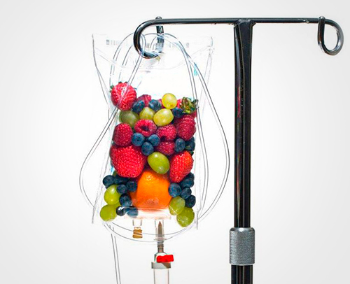
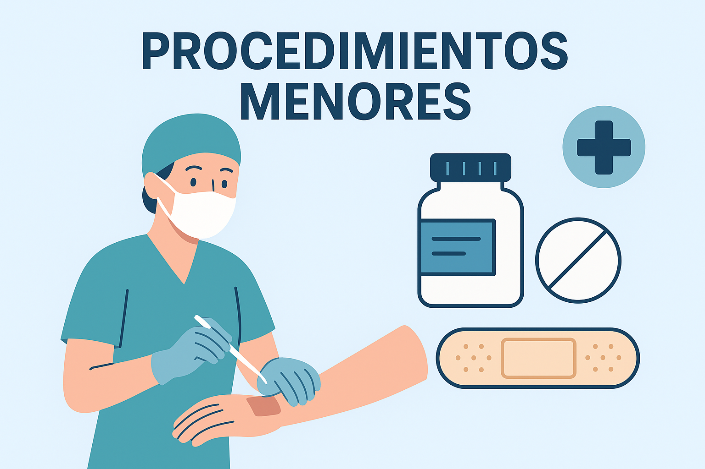

Nuestros Servicios
Atención médica en casa en Bogotá, Medellín y Cartagena. Nuestro equipo de profesionales está disponible 24/7 para brindarte consultas, terapias, exámenes y procedimientos sin salir de tu hogar.

Consulta Médica Domiciliaria
Atención médica general en casa: diagnóstico, fórmulas, incapacidades y control de enfermedades crónicas. Ideal para fiebre, dolor, gripa, infecciones y pacientes que requieren valoración sin desplazamientos.

Terapia Respiratoria en Casa
Tratamiento de asma, bronquitis, EPOC y otras afecciones pulmonares. Realizamos fisioterapia respiratoria, nebulizaciones, higiene bronquial y asesoría en el uso de inhaladores, todo en tu hogar.

Laboratorio Clínico en Casa
Toma de muestras de sangre, orina, coprológico y pruebas rápidas en tu hogar. Resultados confiables con entrega digital y asesoría sobre preparación previa.

Ecografía a Domicilio
Ecografías obstétricas y generales realizadas con equipos portátiles de alta resolución. Informes médicos claros y seguros en la comodidad de tu hogar.

Sueroterapia y Vitaminas
Hidratación, vitaminas y minerales aplicados en casa bajo supervisión médica. Ideal para fatiga, deshidratación, migraña o recuperación post-enfermedad.

Procedimientos Menores
Realizamos curaciones, retiro de suturas, lavado de oídos, control de diabetes e hipertensión, además de EKG y seguimiento postoperatorio. Todo con insumos de alta calidad.